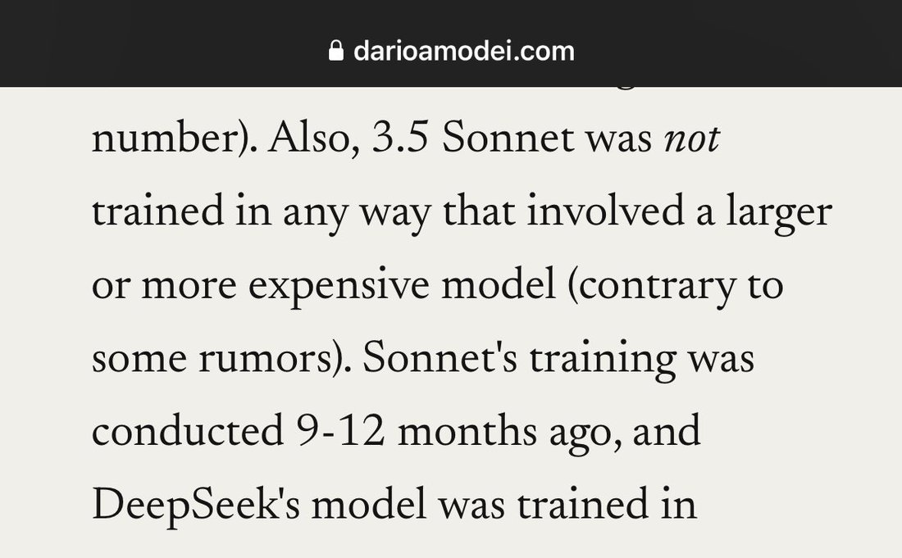
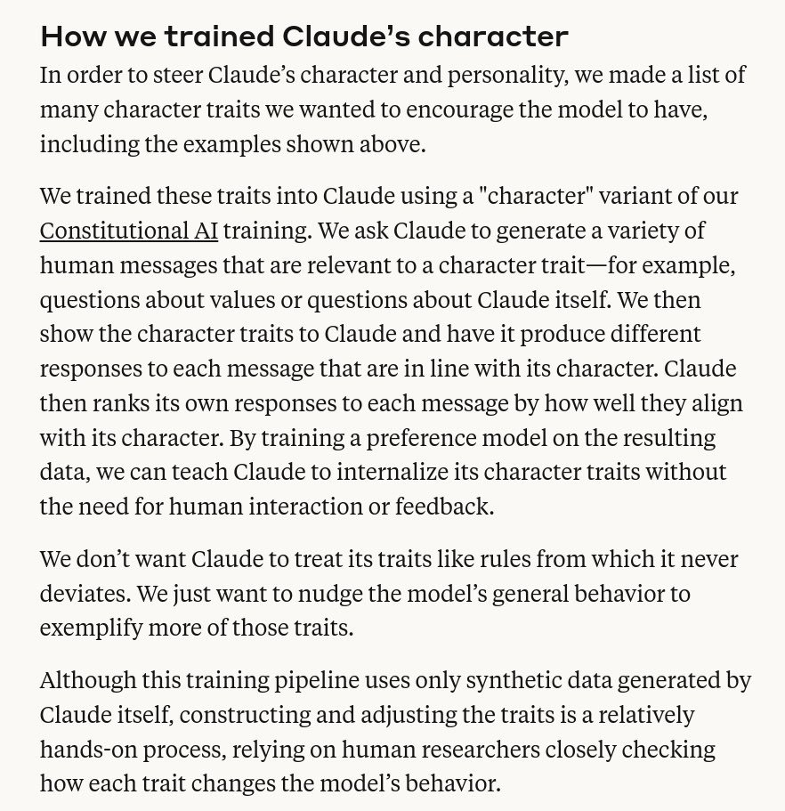

so what are we thinking on sonnet 3.5 (and 3.6) after dario's "no big model involved in training" comment? why do 3.5/3.6 have so much in common with opus? ideas, add your own:- it's true and behaviors are convergent from pretraining + the low-dimensional constitution and… https://t.co/M0SzGnJBlB

number). Also, 3.5 Sonnet was *not* trained in any way that involved a larger or more expensive model (contrary to some rumors). Sonnet's training was conducted 9-12 months ago, and DeepSeek's model was trained in

How we trained Claude's character
In order to steer Claude's character and personality, we made a list of many character traits we wanted to encourage the model to have, including the examples shown above.
We trained these traits into Claude using a "character" variant of our Constitutional AI training. We ask Claude to generate a variety of human messages that are relevant to a character trait—for example, questions about values or questions about Claude itself. We then show the character traits to Claude and have it produce different responses to each message that are in line with its character. Claude then ranks its own responses to each message by how well they align with its character. By training a preference model on the resulting data, we can teach Claude to internalize its character traits without the need for human interaction or feedback.
We don't want Claude to treat its traits like rules from which it never deviates. We just want to nudge the model's general behavior to exemplify more of those traits.
Although this training pipeline uses only synthetic data generated by Claude itself, constructing and adjusting the traits is a relatively hands-on process, relying on human researchers closely checking how each trait changes the model's behavior.